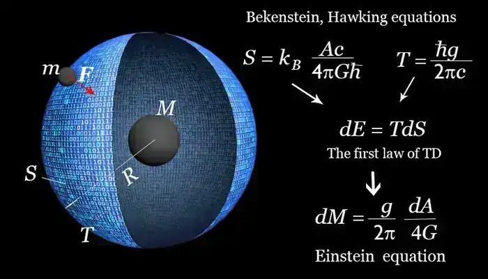

The idea
The holographic principle suggests that the information in a volume of space is encoded on its boundary. Craig Hogan argued that this would produce a fundamental 'holographic noise' — a jitter in the positions of objects at the Planck scale, detectable as correlated fluctuations in the light paths of an interferometer.
Maps, diagrams and images



The experiment
The Holometer at Fermilab was built for this: two 40-metre interferometers, cross-correlated to look for the predicted jitter. Results published in 2015 found no holographic noise at the predicted level, ruling out Hogan's original model in its simplest form.
That is a clean negative result on a testable prediction, which is rarer in fundamental physics than it should be. Later work has refined the bounds.
Documented: the hypothesis and its predicted signal.
Built: the Holometer, at Fermilab.
Result: no signal at the predicted level.
Ruled out: the simplest version of the model.
The honest label: live debate that a purpose-built experiment has narrowed decisively.
Why it is in the archive
Because it is the best example here of a claim that was tested properly and came back negative, with the negative published and accepted.
Open resources on this topic
- BookFluctuations of spacetime and holographic noise in atomic interferometry — ['Ertan Göklü', 'Claus Lämmerzahl'] · 2009 (Internet Archive, free to read)
- BookHolographic Noise in Interferometers — Craig J. Hogan · 2010 (Internet Archive, free to read)
- BookSpacetime Indeterminacy and Holographic Noise — Craig J. Hogan · 2007 (Internet Archive, free to read)
- PapersOpen-access articles: DOAJ · PubMed Central · Internet Archive Scholar
- BooksPublic-domain and borrowable copies: Open Library · Project Gutenberg · Google Books
More images
Cite this page
Momin, S. (2026). Holographic Noise. The Larger World Archive. https://drsamonline.github.io/LARGE_GLOBE/holographic-noise.htmlMomin, Sohil. “Holographic Noise.” The Larger World Archive, 2026, https://drsamonline.github.io/LARGE_GLOBE/holographic-noise.html.Momin, Sohil. “Holographic Noise.” The Larger World Archive, 2026. https://drsamonline.github.io/LARGE_GLOBE/holographic-noise.html.@misc{holographic2026holographic,
author = {Momin, Sohil},
title = {Holographic Noise},
year = {2026},
howpublished = {The Larger World Archive},
url = {https://drsamonline.github.io/LARGE_GLOBE/holographic-noise.html},
note = {Last reviewed 20 November 2026}
}Last reviewed 20 November 2026 · Corrections policy · this page is not peer reviewed
Sources for this page
- Wikipedia, “Holographic principle” — the idea behind iten.wikipedia.org
- Wikipedia, “Holometer” — the experimenten.wikipedia.org
- Wikipedia, “Interferometry” — the methoden.wikipedia.org
- Wikipedia, “Planck length” — the scale involveden.wikipedia.org